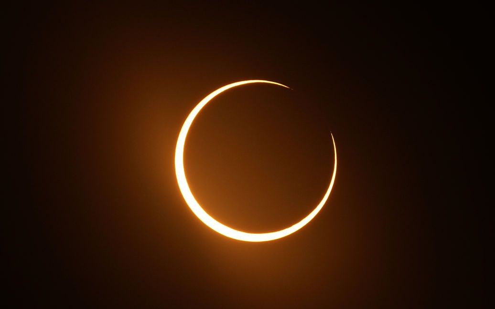

Китай показав ракету яка доставить астронавтів на Місяць
Китай показав моделі ракет і космічних кораблів, які країна розробляє для відправки астронавтів на Місяць.
Сонце зникне на 4 хвилини: коли спостерігати повне сонячне затемнення 2024 року
Повне сонячне затемнення, коли Місяць повністю закриє собою Сонце, відбудеться 8 квітня 2024 року. У цей час вдень протягом 4 хвилин Сонце не зможуть бачити приблизно 32 млн осіб, які живуть у Північній Америці.